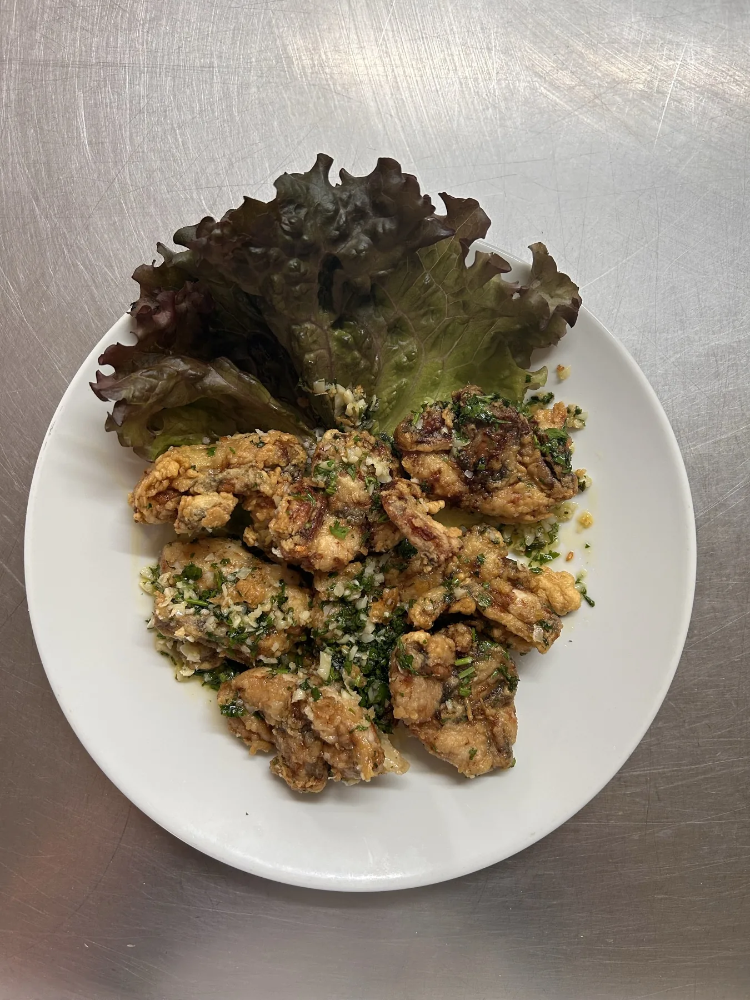
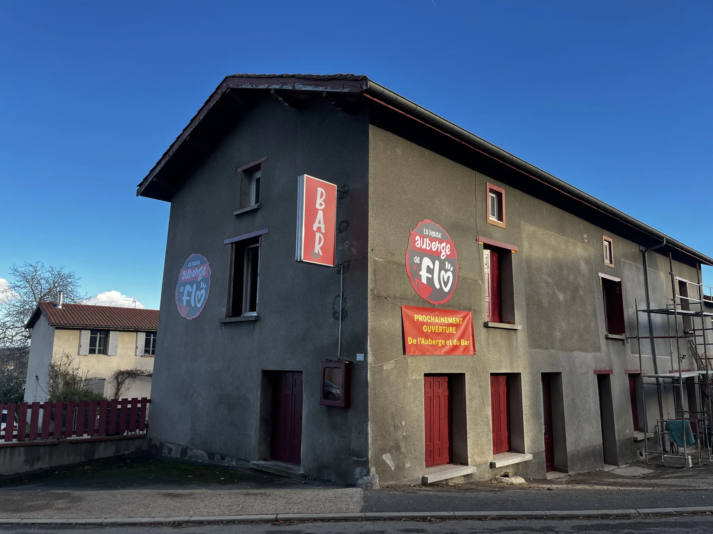
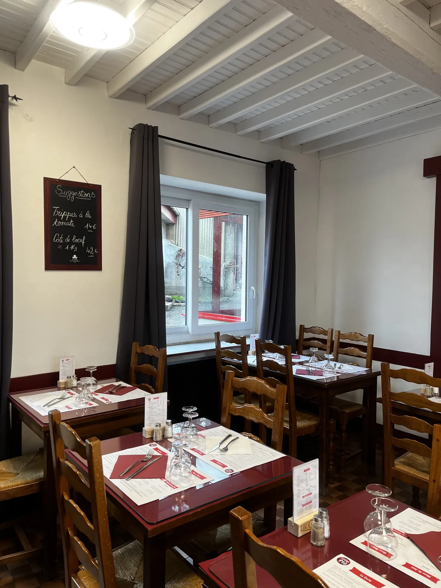
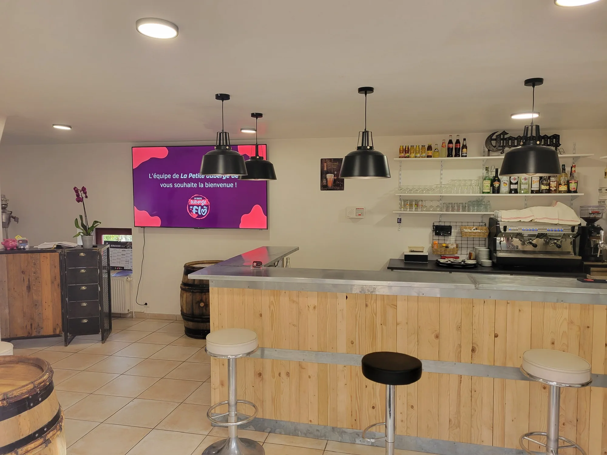
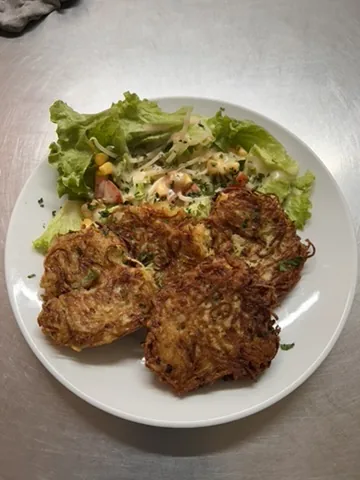
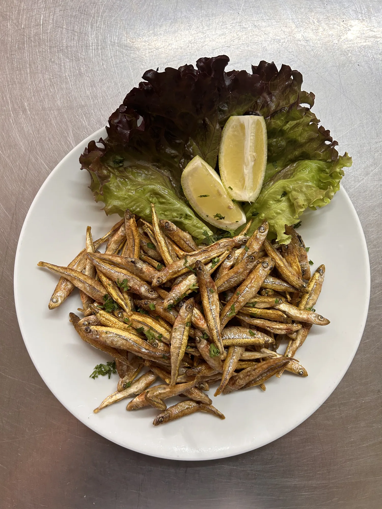
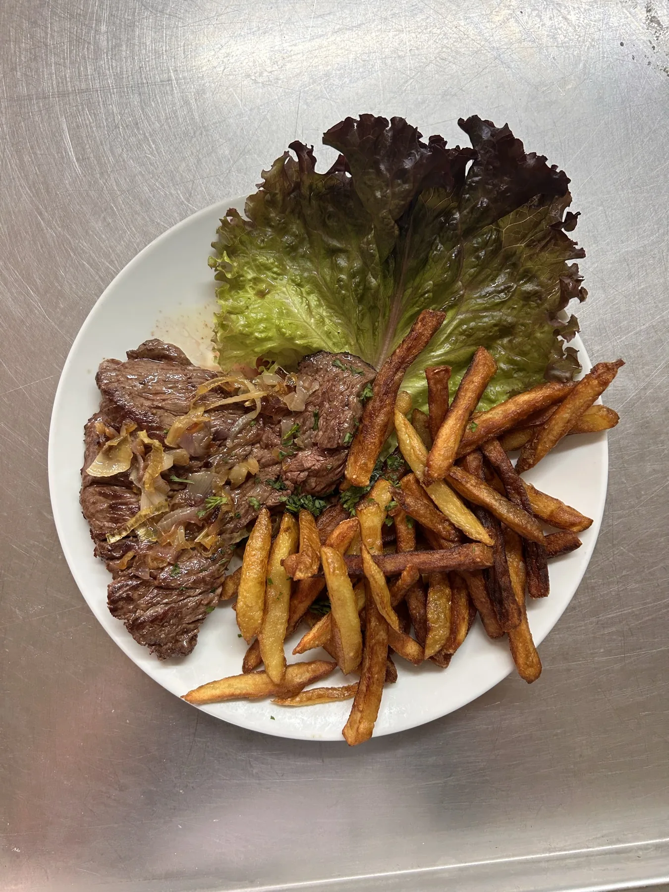
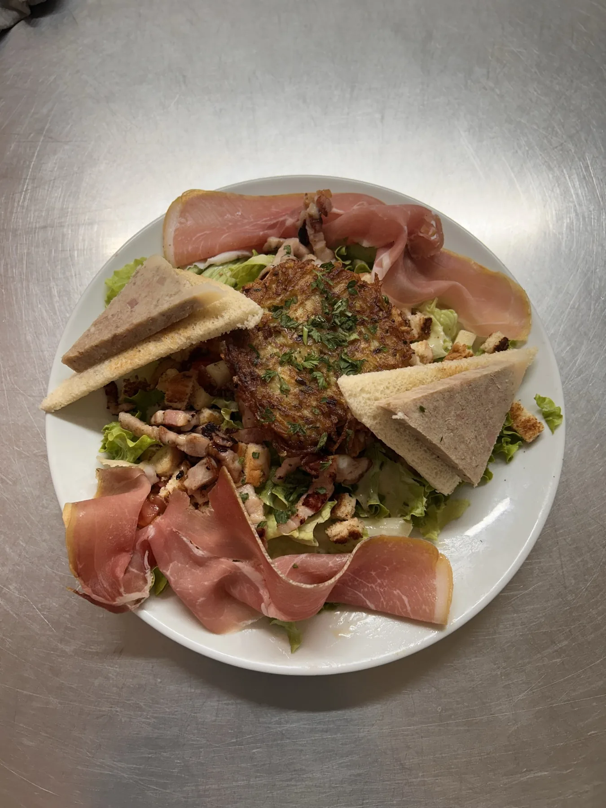
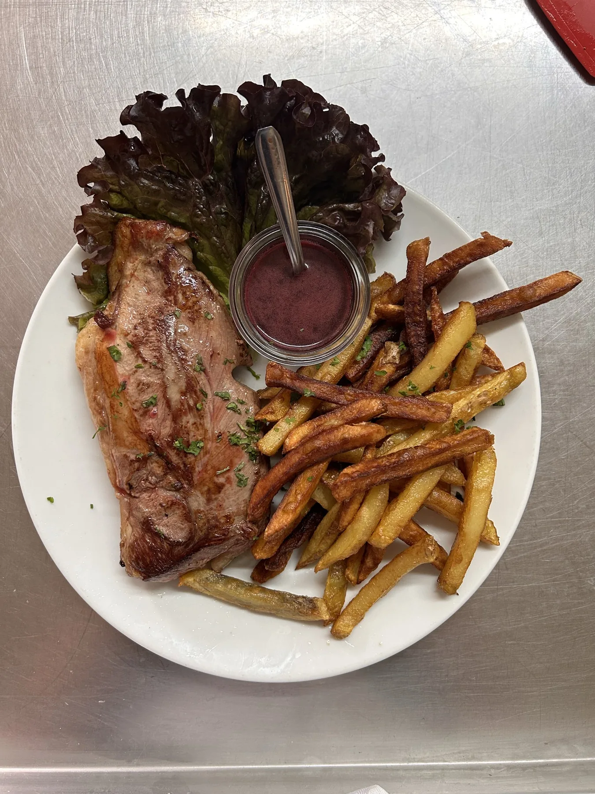
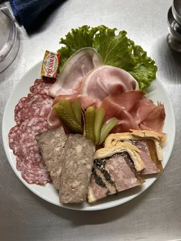

★ Signature
Les Grenouilles
Cuisses fraîches, beurre persillé, ail et fines herbes du jardin. Le plat qui a fait la réputation de la maison — à savourer sans modération.

— Depuis toujours, en plein cœur du Forez —
Une cuisine de terroir, généreuse et faite maison.
Grenouilles, râpées, friture & menu du jour à 16,50 € — autour de produits frais et d'une table familiale.
— Notre Maison —
Nichée au creux du village de Saint-Bonnet-les-Oules, La Petite Auberge de Flo cultive depuis ses débuts l'art d'une table simple, chaleureuse et profondément ancrée dans la tradition foréziene.
Ici, pas d'artifice : un bar de village, une salle aux boiseries patinées, et une cuisine ouverte sur ce qui se fait de meilleur dans la région. On y vient pour savourer les spécialités de la maison, partager une bouteille entre amis ou organiser réceptions et repas de groupe.


— Nos Spécialités —
Trois recettes signature préparées à la commande, généreuses et toujours servies avec le sourire. Le reste de la carte change au gré du marché.

★ Signature
Cuisses fraîches, beurre persillé, ail et fines herbes du jardin. Le plat qui a fait la réputation de la maison — à savourer sans modération.

Spécialité du Forez
Une tradition locale : galettes de pommes de terre râpées, dorées à la poêle, croustillantes à l'extérieur et fondantes au cœur.

Petit Poisson/p>
Petite friture du dimanche — à partager au comptoir ou en grande tablée.




— La Carte —
Une cuisine de tradition, préparée maison à partir de produits frais. La carte évolue au fil des saisons et de l'inspiration.
Jusqu'à 12 ans
10€50
Offert jusqu'à 6 ans — 1 par commande
Vendredi soir → dimanche soir
21€50
Vendredi soir → dimanche soir
26€50
Vendredi soir → dimanche soir
27€50
Menus disponibles du vendredi soir au dimanche soir — et sur réservation en semaine.
— Nos soirées —
Tout au long de l'année, on aime surprendre nos clients avec des soirées à thème : karaoké, paella, escapade basque, dégustation d'huîtres… Faites défiler pour découvrir nos rendez-vous.
Micro, dîner et bonne humeur — l'auberge se transforme en scène ouverte le temps d'une soirée.
Une paella géante mijotée à la plancha, du safran à profusion et une sangria fraîche en accompagnement.
Axoa de veau, piperade, gâteau basque… une virée gourmande au cœur du Pays Basque, l'espace d'une soirée.
Dégustation d'huîtres fraîches arrivées du matin, accompagnées d'un verre de vin blanc sec.
Foie gras mi-cuit, chutney de figues et pain d'épices toasté — la soirée gourmande de l'année.
Cochon rôti à la broche, pommes sarladaises et confitures maison — un festin à partager en grande tablée.
Envie d'être prévenu(e) ? Suivez-nous sur Facebook pour ne rien manquer.
« On vient pour la cuisine,
on revient pour l'ambiance. »
— Les habitués de l'auberge
— Notre Auberge —
— Ils en parlent —
★★★★★
« Les meilleures grenouilles que j'ai mangées depuis longtemps ! L'accueil de Flo est juste parfait, on se sent comme à la maison. »
★★★★★
« Un vrai bistrot de village comme on les aime. Râpées croustillantes, ambiance chaleureuse et addition très correcte. »
★★★★★
« Menu du jour à 16,50€ imbattable, tout est fait maison et savoureux. On y retourne sans hésiter dès qu'on est dans le coin. »
★★★★
« Soirée karaoké géniale ! On y a fait notre anniversaire en groupe, l'équipe a été aux petits soins, à recommander. »
★★★★★
« La friture du dimanche est à se damner. Cuisine généreuse, produits frais, service avec le sourire. Un must à Saint-Bonnet ! »
★★★★★
« Souris d'agneau fondante, gratin dauphinois maison, crème brûlée parfaite. Une cuisine de tradition d'une qualité rare aujourd'hui. »
★★★★★
« On a privatisé pour un repas de famille, Flo nous a concocté un menu sur mesure. Tout le monde s'est régalé. Merci ! »
★★★★★
« Ambiance bistrot authentique, patron passionné, cuisine de cœur. Le menu Râpées est un délice — typique du Forez. »
— Nous trouver —
Sur réservation pour les groupes et réceptions. La cuisine ferme une heure avant la fermeture de la salle.
Téléphone
Suivez-nous
— Horaires —